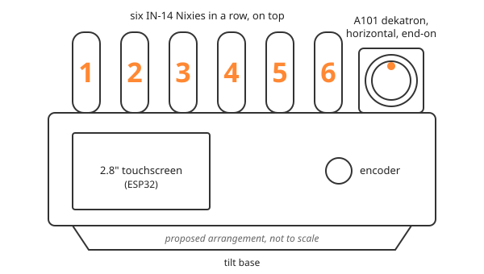

The display¶
The finished instrument: six IN-14 Nixies showing digits, one A101 dekatron showing a moving glow, a 2.8" touchscreen and a rotary encoder for local control, and a USB serial port for a computer to send numbers to it.
Not built yet
This page describes the plan. Features move here from the plan as they are demonstrated on the real hardware, with photographs; nothing below is claimed to work yet.

The proposed arrangement, not to scale. The enclosure is not designed yet, so positions and proportions will change.
The touchscreen decides what is shown. Two small controller boards, one for the dekatron and one for the Nixies, decide how: they generate the pulses and switching the tubes need, so that the timing never depends on the user interface. See the architecture for the full picture.
What "universal" means¶
The Nixies show a number; the dekatron shows motion or a count; the touchscreen carries what the tubes cannot, such as a label, units, a minus sign or a small history plot. Any program that can write to a serial port can use all three, and the display also has modes of its own built in.
Built in, with no computer attached:
- A clock, a timer and stopwatch, and a demonstration and self-test mode (digits, decimal points, and the dekatron's glow rotating, swinging like a pendulum and finding its index).
- Collatz hailstones. Pick a starting number with the encoder: halve it if even, triple it and add one if odd, and repeat. The Nixies show each value, the dekatron steps one way for every halving and the other way for every 3n+1, and the touchscreen plots the trajectory as it climbs and falls (27 takes 111 steps and peaks at 9232).
- Kaprekar's routine. Sort a number's digits largest-first and smallest-first and subtract; repeat. Every four-digit number with at least two different digits reaches 6174 within seven steps; six-digit numbers fall into their own fixed points and cycles. The dekatron steps once per iteration.
- Monte Carlo π. Random points land on a square on the touchscreen; the fraction inside the circle gives π, and the Nixies show the estimate creeping towards 3.14159 while the dekatron's glow wanders one random step per point.
- Primes. The Nixies count up and the dekatron steps on each prime, so the glow stutters through the gaps; the touchscreen shows the gaps, or the primes on an Ulam spiral.
Driven by a computer: in remote mode a computer, Raspberry Pi or experiment drives the display with simple text commands over USB. Some of the uses the plan has in mind:
- An experiment's readout. A script reads an instrument and sends the value; the Nixies show it, the touchscreen its name and units.
- A computer-controlled counter. Events counted on a computer (a Geiger counter's clicks, say) step the dekatron one place each, while the Nixies keep the running total.
- Progress you can watch. A long computation or a timer drives the dekatron's glow round the ring as it advances, with the time left on the Nixies.
These are plans, not demonstrations: they will appear here with photographs as they work.